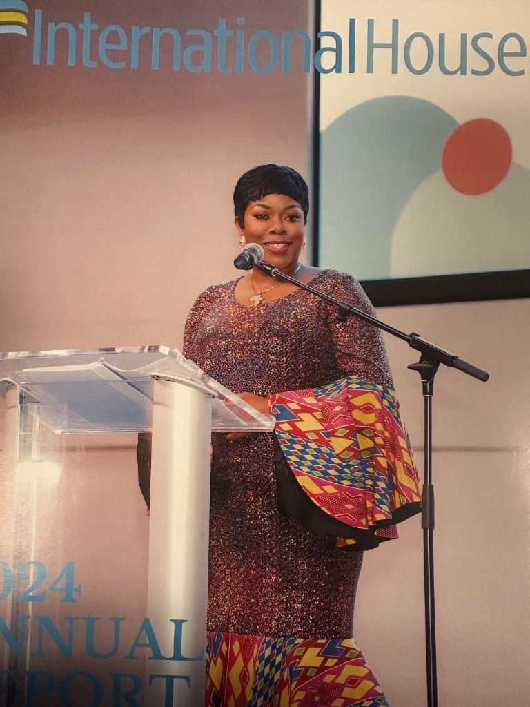
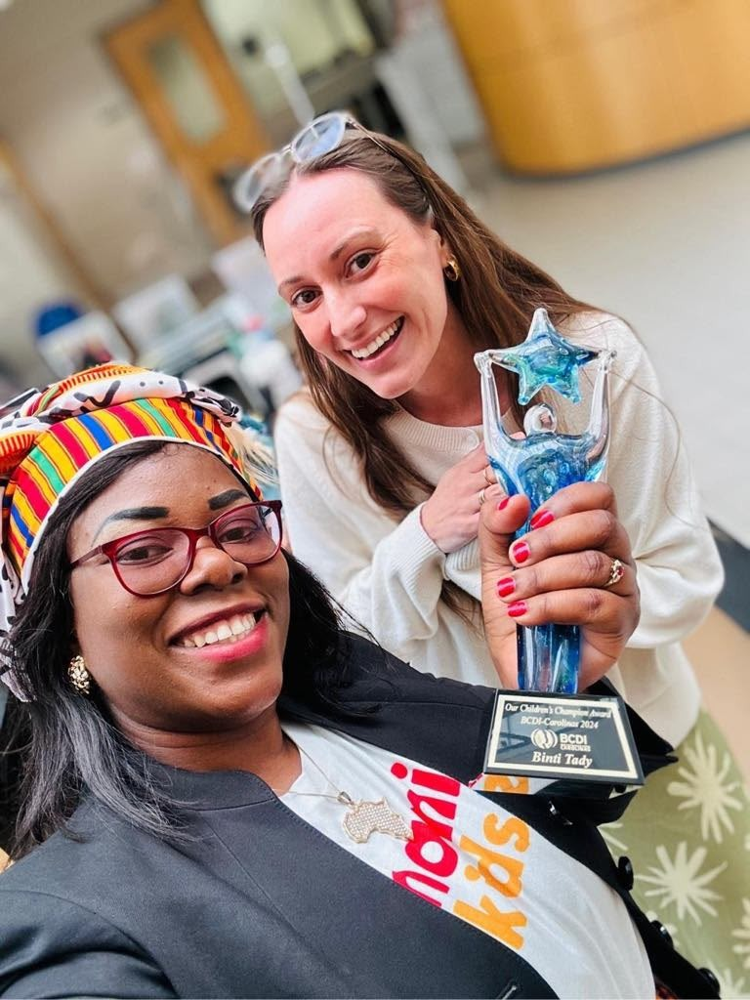

Binti Muzuri Amisi
FOUNDER & EXECUTIVE DIRECTOR
From Lived Journey to Lifelong Mission: Binti Muzuri Amisi
Binti Muzuri Amisi founded Amani Kids Inc. not out of an academic exercise in social work, but out of the raw reality of arriving in the United States from the Democratic Republic of the Congo.
Today, she leads Amani Kids Inc. as Executive Director, guiding an organization dedicated to connecting African refugee, immigrant, and newcomer children and families to vital resources, educational opportunities, and community wellbeing in Charlotte, North Carolina.
From the Democratic Republic of the Congo to Charlotte
In the Democratic Republic of the Congo, Binti earned her degree in International Public Law and worked as a lawyer, specializing in child protection and family law. Her commitment to advocating for vulnerable children and families was already the defining cornerstone of her professional life.
Upon arriving in the United States and resettling in Charlotte, North Carolina, Binti experienced firsthand the deep challenges of international transition: complex systems, language shock, and the disorientation of rebuilding a life from the ground up while raising young children.
In those early months, the weight of resettlement was compounded by the silence and isolation that so often accompany newcomers navigating unfamiliar bus routes, school systems, and public offices without an established cultural community.
From Receiving Support to Higher Education
During her initial integration in Charlotte, International House played a pivotal role in Binti's journey, providing English language classes and essential guidance that helped her adapt to her new environment.
Empowered by this foundational support, Binti pursued higher education in early childhood development at Central Piedmont Community College (CPCC). Demonstrating natural leadership, she served as President of the Early Childhood Club from Fall 2023 through Spring 2024, and graduated from CPCC in Spring 2024 with her degree in Early Childhood Education.

Finding Purpose Through Volunteer Service
Driven by a lifelong calling to serve children, Binti actively dedicated her time as a volunteer with three prominent local refugee and immigrant support organizations: OurBRIDGE for Kids, Refugee Support Services, and Carolina Refugee Resettlement Agency.
Through these volunteering roles, she worked directly alongside newcomer families and youth, witnessing firsthand how language barriers and institutional unfamiliarity caused brilliant children to struggle in classrooms and hardworking parents to feel disempowered.
This extensive volunteer service crystallized her purpose: informal assistance was vital, but newcomer families needed an enduring, culturally grounded institutional bridge created by someone who shared their language, culture, and lived resettlement journey.
The Birth of Amani Kids Inc.
In June 2023, Binti brought this vision to life by founding Amani Kids Inc. The name reflects the essential heart of its mission: 'Amani' means Peace in Swahili.
Her founding premise was simple yet transformative: when you eliminate the fear of the unknown and bridge the cultural divide, immigrant and refugee children and their parents can finally exhale, heal, and begin to flourish.
Amani Kids Inc. was established as a grassroots nonprofit organization in Charlotte, dedicated to supporting African newcomer youth and families through educational guidance, cultural belonging, and essential resource navigation.

Recognition and Professional Achievements
Binti’s steadfast leadership and selfless community service have earned deep trust and civic recognition across North Carolina. In 2024, she was honored with the prestigious 'Our Children’s Champion Award' by BCDI-Carolinas (Black Child Development Institute–Carolinas), celebrating leaders who demonstrate exemplary dedication to the education and wellbeing of children.
Professionally, Binti serves as an educator at Merryoaks International Academy within Charlotte-Mecklenburg Schools (CMS). In May 2026, her exceptional commitment to her students and excellence in classroom instruction earned her the nomination for Beginning Teacher of the Year.
Rather than viewing these honors as personal milestones, Binti embraces them as a testament to the resilience of every African newcomer family working toward a bright future for their children.
My Vision: Turning Challenges into Opportunities
For Binti, the resettlement journey is not a story of deficit, but one of immense cultural, intellectual, and human strength. She envisions a Charlotte where every immigrant and refugee child celebrates their dual heritage with pride, and where multilingualism is recognized as a vital superpower.
"Our children bring multilingual gifts, global perspectives, and extraordinary resilience," Binti affirms. "When we provide them with the right educational tools, mentorship, and a community that believes in them, there is no limit to what they can achieve."
Her vision for Amani Kids Inc. remains steadfast: ensuring that every newcomer family is met with dignity, understanding, and the educational opportunities needed to flourish for generations to come.
Walk Alongside Binti and Amani Kids
Every newcomer child deserves a welcoming community, academic support, and the peace to flourish. Whether through financial contribution or volunteer mentorship, your partnership changes lives.